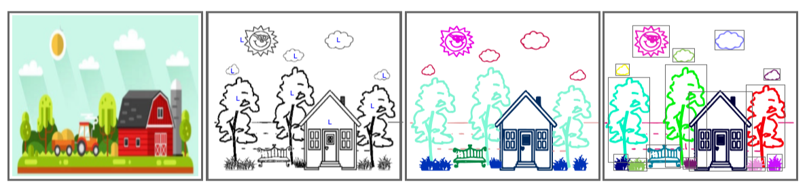
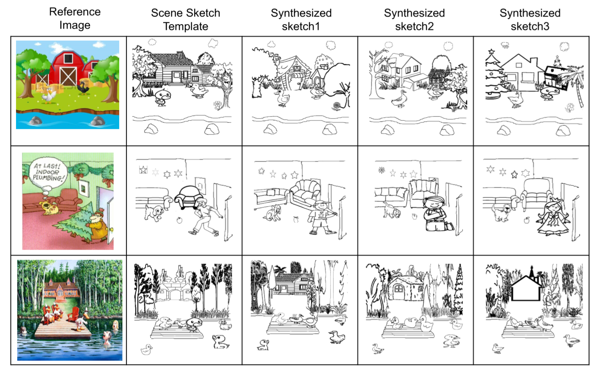

SketchyScene: Richly-Annotated Scene Sketches
Changqing Zou*1
Qian Yu*2
Ruofei Du1
Haoran Mo3
Yi-Zhe Song2
Tao Xiang2
Chengying Gao3
Baoquan Chen**4
Hao Zhang5
1University of Maryland
2Queen Mary University of London
3Sun Yat-sen University
4Shandong University
5Simon Fraser University
ECCV 2018
[Paper] [Code]
{kind=link}
Abstract
We contribute the first large-scale dataset of scene sketches, SketchyScene, with the goal of advancing research on sketch understanding at both the object and scene level. The dataset is created through a novel and carefully designed crowdsourcing pipeline, enabling users to efficiently generate large quantities realistic and diverse scene sketches. SketchyScene contains more than 29,000 scene-level sketches, 7,000+ pairs of scene templates and photos, and 11,000+ object sketches. All objects in the scene sketches have ground-truth semantic and instance masks. The dataset is also highly scalable and extensible, easily allowing augmenting and/or changing scene composition. We demonstrate the potential impact of SketchyScene by training new computational models for semantic segmentation of scene sketches and showing how the new dataset enables several applications including image retrieval, sketch colorization, editing, and captioning, etc.
Paper
ECCV, 2018.
Citation
Changqing Zou, Qian Yu, Ruofei Du, Haoran Mo, Yi-Zhe Song, Tao Xiang, Chengying Gao, Baoquan Chen and Hao Zhang. "SketchyScene: Richly-Annotated Scene Sketches", in ECCV, 2018. Bibtex
Code: TensorFlow
Dataset
|
*From left to right: reference image, synthesized sketchy scene ("L" is used to mark the category alignment), ground-truth of semantic and instance segmentation. *Examples of augmented scene sketches based on the scene sketch templates. |
7265 (train 5617 + val 535 + test 1113) [Download](Further data will come soon) |
{kind=link}
{kind=link}
Demo
[Try] |
{kind=link}
Acknowledgement
This work was partially supported by the China National 973 Program (2015CB352501), NSFC-ISF(61561146397), NSERC 611370, and the China Scholarship Council (CSC).